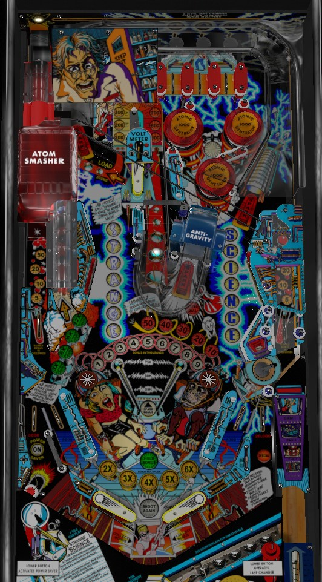

Not to be confused with Strange World (Gottlieb, EM, 1978).
Scoring on Strange Science is overwhelmed by the playfield multipliers that are present during any multiball. Lock balls by using the upper right flipper in the top-center of the game to whack a ball to the left, up a somewhat-hidden ramp, and into the back of the Atom Smasher lock structure. Locking 5 balls starts multiball immediately, with a very ridiculous 12x playfield multiplier while all 5 balls are in play. Multiball playfield multipliers are so unbalanced that there is little rhyme or reason to multiball strategy beyond "keep as many balls in play as you can for as long as possible".
The shooter lane and far left lane are the game's two Bubble lanes. At all times, they have a roving lit value that changes between 5,000, 10,000, 20,000, and 50,000 points. There is no way to manipulate or increase the value: you simply score whichever value is lit when the switch in a Bubble lane is triggered. As a skill shot, simply try to collect 50,000 points on the plunge from the lit Bubble lane.
The Spark Bonus starts each ball at 25,000 points. Completing the words Strange and Science once increases the Spark Bonus to 50,000, and completing them again maxes out the Spark Bonus at 75,000 points. (During any multiball, the Spark Bonus cycles between 25,000, 50,000, and 75,000 on its own.) Completing Strange Science also lights the out lanes: a kickback on the left that stays on until collected, and a Special on the right that is only present for a few seconds.
To collect Strange Science letters, hit the yellow standup targets on the middle-left or right side of the game. The targets only correspond to the letters RAN in Strange and IEN in Science; lit letters in Strange and Science constantly rotate, so you want to hit these targets any time the middle three letters are unlit. The more pop bumpers have been hit during the game so far, the faster the letters move. Hitting a target with an unlit letter will light that letter and score 5,000 points plus a bonus advance. Hitting a target with a lit letter scores 1,000 points and a bonus advance.
Strange Science letters can also be spotted for you by scoring a Particle Separator shot, an Anti-Gravity shot, loading a ball into the Atom Smasher, and lighting a letter in the L-A-B top lanes.
The L-A-B top lanes consist of a plastic piece with three holes located above three rollover lanes. On the plunge, and whenever an orbit shot is made, the ball will end up in the Particle Separator, which is the plastic piece above the lanes. When the ball goes through any of the holes in the Particle Separator, the Separator value is scored- this is equal to the Spark Bonus if the orbits were lit, or 10,000 points if not, plus 3 bonus advances either way. Orbits are lit at the start of each ball. Scoring a Spark Bonus from the Separator unlights both orbits and lights the Anti-Gravity shot for Spark Bonus instead. Making the Anti-Gravity shot will relight the orbits for Spark Bonus.
Going through a Particle Separator hole or going through a top lane underneath the Separator both light the corresponding letter in L-A-B. Lane change is available, but only by using the second button on the right side of the cabinet, not the conventional flipper button. Lighting a letter in L-A-B scores 5,000 points and 3 bonus advances, while recollecting an already-lit letter scores 1,000 points. These rules and the structure of the Particle Separator make it relatively easy to collect 2 or more L-A-B letters in a single trip to the top of the playfield. Spelling L-A-B scores 10,000 points and increases the bonus multiplier toward its maximum of 6x.
The cyan flip ramp just to the right of center playfield is the Anti-Gravity shot. A full Anti-Gravity shot goes up the flip ramp, makes a u-turn, and hits the hanging rollunder target about halfway up the center lane, all within 3 seconds. If Anti-Gravity is flashing, making a full one of these shots scores the Spark Bonus plus 5 bonus advances. If it is not flashing, an Anti-Gravity shot scores 10,000 points and 1 bonus advance. The Anti-Gravity shots and Particle Separator orbits alternate whether or not they are flashing after a lit shot is made, as described above.
Successful Anti-Gravity shots in a single ball also give additional awards if the Anti-Gravity was lit for Spark Bonus.
"Loading" a ball consists of using the upper right flipper in the top center of the game to hit a ball to the right along the orange arrow insert so that the ball goes up a hidden flip ramp and enters the red Atom Smasher structure from behind. This scores the current Spark Bonus and locks a ball. When one or more balls are locked, they become pseudo-captive balls that can be shot directly from the lower right flipper toward yellow arrow insert in the near left. There are two (and a half) ways to start multiball.
There are no multiball-specific scoring features other than the playfield multiplier. All single-ball features are available. When there are 2, 3, 4, or 5 balls currently in play simultaneously, the playfield multiplier applied to all scoring in the game is set to 3x, 6x, 9x, or 12x respectively. The only scoring not affected by playfield multiplier are the bonus collects from Brain Transfer (see below) and the lower right saucer. The green inserts just above the left slingshot display the current playfield multiplier. 6x and 9x playfield multipliers are pretty jaw-dropping on their own, but 12x is absolutely ludicrous. An average ball on Strange Science that does not play any multiball can usually be expected to score between 100,000 and 300,000 points, but with a 12x playfield multiplier running, anything lit for Spark Bonus is guaranteed to score at least 300,000 points for a single shot. This can easily become 900,000 since the Spark Bonus constantly rotates between its possible values of 25,000, 50,000, and 75,000 during any multiball. With so much scoring suddenly available, the question just becomes "how do I keep all 5 balls in play for as long as possible to continue to take advantage of this multiplier?" which ultimately boils down to individual player preference and skill regarding multiball control.
If there are no balls in the Atom Smasher, shooting it from below will act like a ramp, and a ball can be directly shot out the back of the Atom Smasher and down the cross-playfield wireform in this way. There's really no incentive to doing this, but it's possible and kind of neat.
All pop bumpers score 1,000 points. Every 13th pop bumper hit over the course of the game increases the Volt Meter one level. The hanging rollunder switch in the center lane that serves as the exit switch for the Anti-Gravity shot scores 1,000 points and a bonus advance, plus 10 times the current number lit on the Volt Meter- the Volt Meter itself ranges from 100 to 900 points, making a max-value center lane shot worth 10,000 points and a bonus advance. The higher the Volt Meter has been raised, the faster the lit Strange Science letters will move.
If Brain Transfer has not already been initiated, anything in the game that advances the end of ball bonus will cause the left star rollover near the slingshot to start flashing. Making this star rollover when it is flashing will initiate the Brain Transfer, as indicated by the 1-2-3-4-5-6-7-8-9 lights in the bonus ladder flashing in an arcing motion. After Brain Transfer has been initiated, the right star rollover will begin flashing once the bonus is increased to the next value that ends in 9 (9, 19, 29, 39, 49, or 59). Making the right star rollover when it is flashing scores the entire current base bonus value, without the bonus multiplier considered.
Star rollovers score exactly 130 points when not flashing. The left star rollover scores 2,000 points when it is flashing.
The lower right saucer is a difficult place to end up on purpose: you either need a strange ricochet bounce involving the slingshots, or you need to knock a ball out of the Atom Smasher and have it roll down the right Bubble lane and end up in the saucer. (Or I guess you could short plunge into this saucer, which may actually be a decent idea if the kickout is safe and you just loaded a ball into the Atom Smasher while the saucer was lit for bonus collect.)
Any time the Spark Bonus is collected from Anti-Gravity, this saucer is lit for a bonus collect, which scores the entire end of ball bonus including multiplier but does not reset it. The saucer scores 5,000 points when not lit.
Strange Science has a conventional in/out lane setup with 1 out lane, 1 in lane, and 1 slingshot on each side, but the in lanes are slanted so that the ball rolls toward the middle of the table is it comes down the in lane. In lanes score 5,000 points. The right out lane scores 20,000 points and can be lit for Special by collecting the Spark Bonus from Anti-Gravity enough times in a single ball. The left out lane scores only 3,000 points and has an automatic kickback called the Power Saver. The Power Saver is a small moving post that is supposed to pop the ball upward and to the right, going through a one-way gate and into the left in lane. Unfortunately, it doesn't seem to work very well, and there is no compensation for if you drain anyway despite Power Saver being lit. Power Saver is lit for free for the first 0, 1, 2, 3, 4, or 5 balls of the game depending on operator settings; if it is not lit, it can be relit at any time by completely spelling Strange Science.
Bonus multiplier is advanced 1 at a time with each completion of the L-A-B top lanes, toward its maximum value of 6x. Most lanes and targets on Strange Science award 1 bonus advance: you can also get 3 bonus advances from lighting a letter in L-A-B and 5 bonus advances from making an Anti-Gravity shot with Spark Bonus lit. Max bonus is 6x 59,000 = 354,000 points. Completing the Brain Transfer as described above lets you collect the base bonus (not affected by multiplier) mid-ball. Making an Anti-Gravity shot with Spark Bonus lit will in turn light the lower right saucer for a full mid-ball bonus collect that does consider bonus multiplier. By default, base bonus and multiplier are both reset after every ball. Making 2 Spark Bonus Anti-Gravity shots in a single ball lights Hold Bonus, which will recollect the current ball's bonus at the end of the next ball. The held bonus is kept separately from the next ball's bonus ladder: a "true" max bonus collect, then, would be 354,000 points on the current ball plus 354,000 points of previous ball's held bonus for a total of 708,000 points. No bonus amount can be held for more than one ball. If Hold Bonus is earned on the last ball of the game, your final ball's end of ball bonus (including multiplier) will be collected twice.